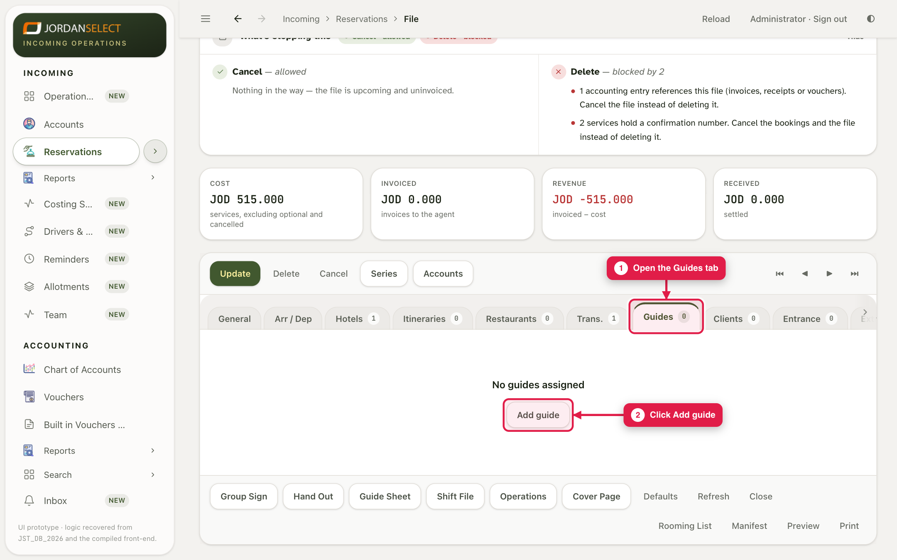
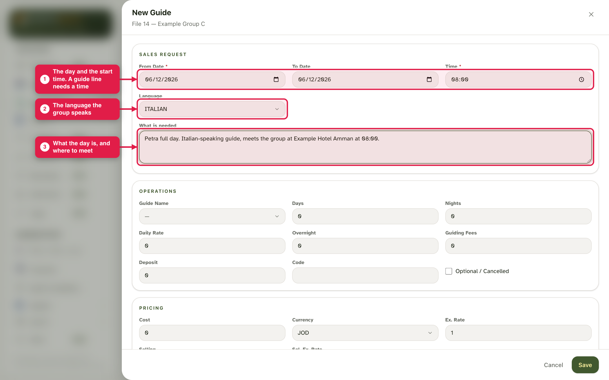
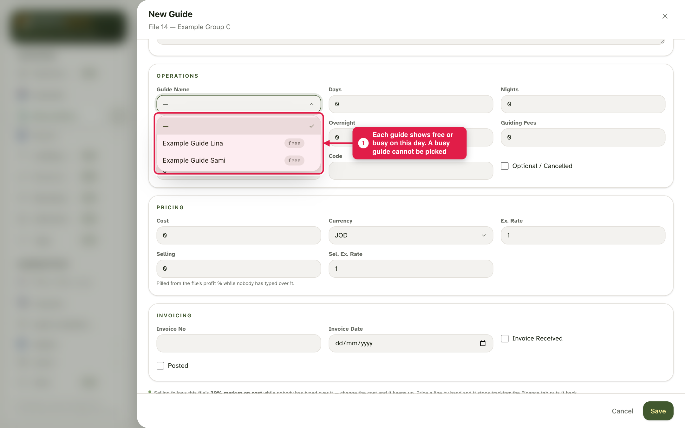
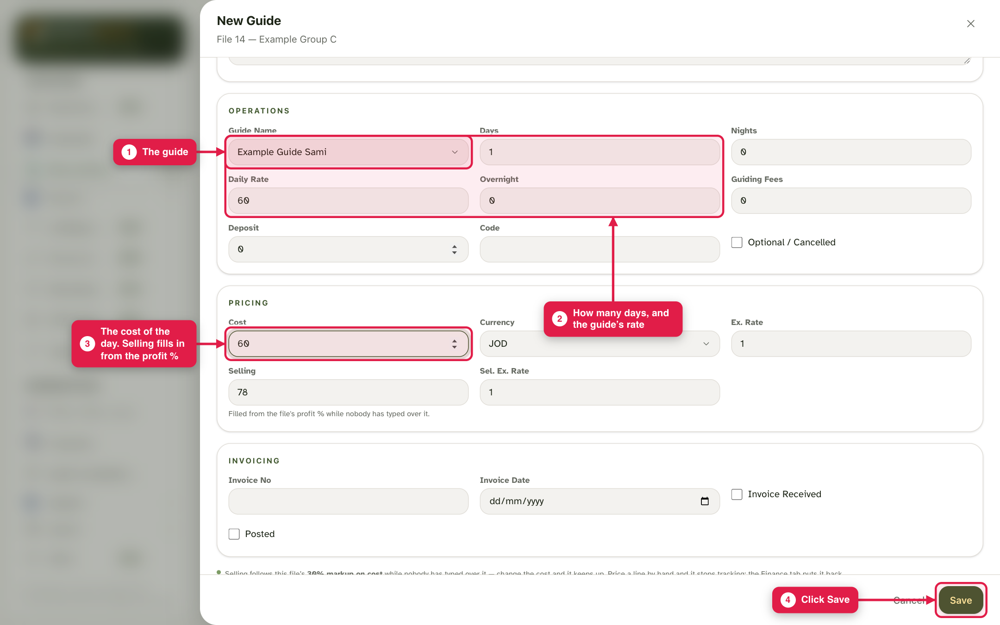
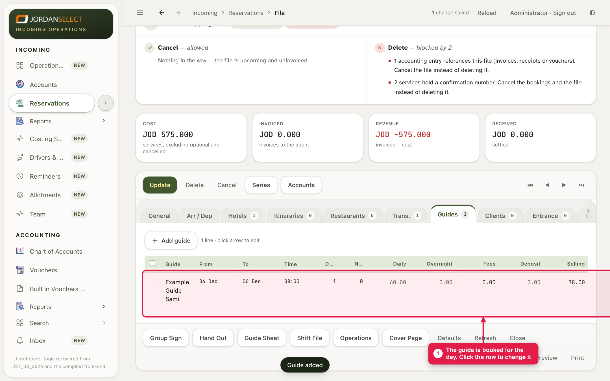

Book a guide for a group’s day. The CRM shows who is free, and will not let you book someone twice.
WhoOperations (Sales may raise the request first)
WhereThe file → Guides tab
Takes2 minutes
You needThe day, the start time, the language and the guide’s rate
How it works
A guide line has two parts, like transport: the request (day, time, language, what is needed) and the operations part (which guide, days, rate). Sales may fill the request and leave the guide empty; then it waits in To assign.
Example in this guide: a Petra full day on 6 December for Example Group C, Italian-speaking, with Example Guide Sami at 60 JOD.
1. The request
1
Open the file, go to the Guides tab and click Add guide. (If Sales already raised it, click their line instead.)

The Guides tab. The number on the tab is how many guide lines the file has.
2
Type the date and the start time, pick the language, and say in What is needed what the day is and where to meet.

A guide line cannot be saved without a time.
2. Choose the guide
3
Open Guide Name. Each guide shows free or busy for that day. Pick a free one.

A busy guide is greyed out and cannot be picked. Guide 4 shows when they are next free.
4
Type the days and the guide’s daily rate, then the Cost for the job. Selling fills in from the file’s profit %. Click Save.

The rate is not filled in from the guide’s account. Type it.
5
The guide is booked for the day.

Click the row to change the day or the guide.
Guide not in the list?A guide must have an account in group GD — Guides (Accounts → New). Ask the reservations manager to add them.
3. Check your work
The day and time match the itinerary.
The guide speaks the group’s language.
The guide shows on the dashboard and the Drivers & Guides board for that day.
Questions? Ask the operations manager. · Last checked: ____ · Screens shown are from a test copy of the CRM with made-up data.